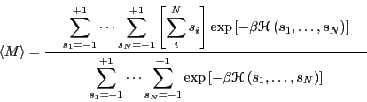
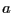
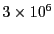
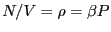
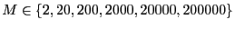
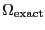
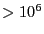
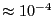
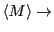

Next: Schedule of Presentations
Up: Course Projects
Previous: Course Projects
Below is a list of suggested topics, and they are only weakly
suggested. You can do almost anything else as long as you find it
reasonably interesting. This could be using one of the codes provided
by me or F&S, or your own code. You will write a short ``report''
(just a few pages, maybe a figure or two), and give a short
presentation about your project. The goal in both cases is to
document and demonstrate what you learned in doing the project,
not so much to document and demonstrate anything new.
- Monte-Carlo simulations:
- Suggested exercises for the Ising magnet (Sec.
![[*]](crossref.png) )
)
- Orientational correlation functions in 2D dumbbells (Sec. )
- Various displacement methods in MC simulation of LJ fluid
- Orientational correlation in LJ Dumbbells in 3D (Sec. )
- Molecular dynamics simulations:
- Structure in a liquid made of particle of two different sizes.
Modify mdlj.c to handle a particle-specific value of . Let
there be two types of particles, and , and let
. For any pair , the used
in evaluating the potential is
.
Modify rdf.c to compute the , , and  radial distribution functions
at a few compositions and overall densities.
- Obstacles: Compute the effect on the diffusivity in a Lennard-Jones
fluid at a given temperature and density by the presence of fixed
obstacles in the domain which interact with the particles. These
obstacles could be other particles which do not move, or
``lines'' of Lennard-Jones potential (See Sec. )
arrayed on some grid or randomly. A relationship between
and
, where
is the density of obstacles, might be interesting to see.
- Any of the suggested exercises involving Stillinger-Weber silicon
(Sec. )
- Case Study 15 from F&S: The overlapping distribution method
for computing
 .
.
- Optimization: Apply one or more of the techniques in Appendix F
to one of the Lennard-Jones codes (mclj.c or mdlj.c), and compare the
performance to the standard  algorithm.
Next: Schedule of Presentations
Up: Course Projects
Previous: Course Projects
cfa22@drexel.edu